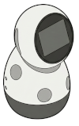

Compatible Robots
Any robot running ROS 2 can be easily made compatible with ROS4HRI by installing existing open-source packages. However, some robots come with native support for the standard.
Commercial Platforms
Image |
Name |
Description |
|---|---|---|

|
PAL TIAGo (website) |
A versatile mobile manipulator used for research in manipulation, perception, and HRI. It features a 7-DoF arm and a lifting torso. |

|
PAL TIAGo Pro (website) |
A next-generation mobile manipulator with dual 7-DoF arms, high-torque motors, and advanced interaction capabilities (screen, LEDs). |

|
PAL TIAGo Pro Head (website) |
The expressive head of the TIAGo Pro, available as a standalone unit for HRI research focusing on social signals and gaze. |

|
PAL ARI (website) |
A high-performance social robot designed for reception, guidance, and entertainment. It features an expressive face and gestures. |
Open-Source & Research Platforms
Image |
Name |
Description |
Link |
|---|---|---|---|
|  | EMOROBCARE |
A low-cost, expressive social robot developed by ICMAT/IIIA (CSIC) for autism therapy. It features a spherical base and a 3-DoF head. |
{kind=link}
Note
If you wish to see your robot listed here, please open a Pull Request on the ROS4HRI website. We will be happy to add your robot to the list.